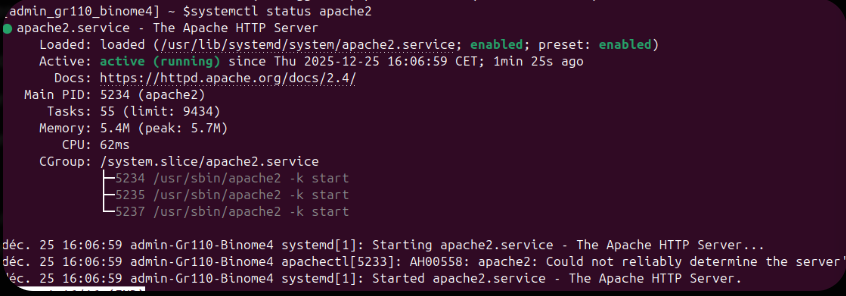
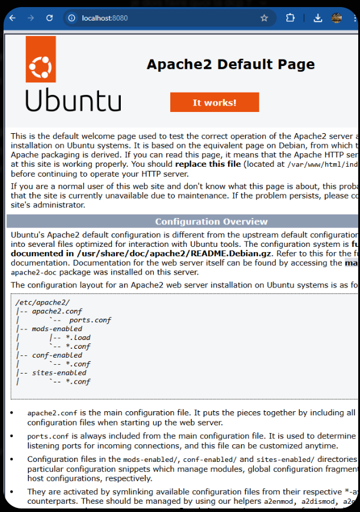

Administration du Système
Gestion des utilisateurs, personnalisation et services Web
1. Administration des Comptes et Identité
Gestion du Groupe et des Binômes
L'organisation du travail collaboratif a nécessité la création d'un environnement partagé. Nous avons créé un groupe de travail nommé Binome4 afin de centraliser les permissions.
Ensuite, trois comptes utilisateurs (Binome4_1, Binome4_2, Binome4_3) ont été générés et affectés à ce groupe pour permettre à chaque membre du trio d'administrer le serveur avec ses propres identifiants.
sudo groupadd Binome4sudo useradd -m -g Binome4 Binome4_1
Personnalisation du Prompt
Pour une administration plus claire, nous avons modifié l'apparence du terminal via le fichier .bashrc. Le prompt a été configuré pour afficher explicitement notre identité de groupe : [admin_gr110_binome4]. Cela permet d'identifier instantanément la machine et l'utilisateur en cours lors des opérations en ligne de commande.
Capture de preuve : Création des comptes et nouveau prompt personnalisé.
2. Preuves de Bon Fonctionnement
L'administration d'un serveur web implique une vérification constante de la disponibilité des services. Pour valider notre installation, nous avons dû nous assurer que le démon Apache2 répondait correctement aux requêtes système et qu'il était capable de délivrer du contenu HTML via le réseau local de la machine virtuelle.
Service Actif
Vérification du statut running via systemctl.
Rendu Localhost
Accès réussi à la page par défaut sur le port 8080.
3. Maintenance du Système
Mises à jour et Sécurité
L'administration d'Ubuntu implique la gestion régulière des paquets pour maintenir la stabilité du serveur Apache. Nous effectuons périodiquement la synchronisation des dépôts et la mise à niveau des logiciels installés pour corriger d'éventuelles failles de sécurité.
sudo apt update
sudo apt upgrade -y